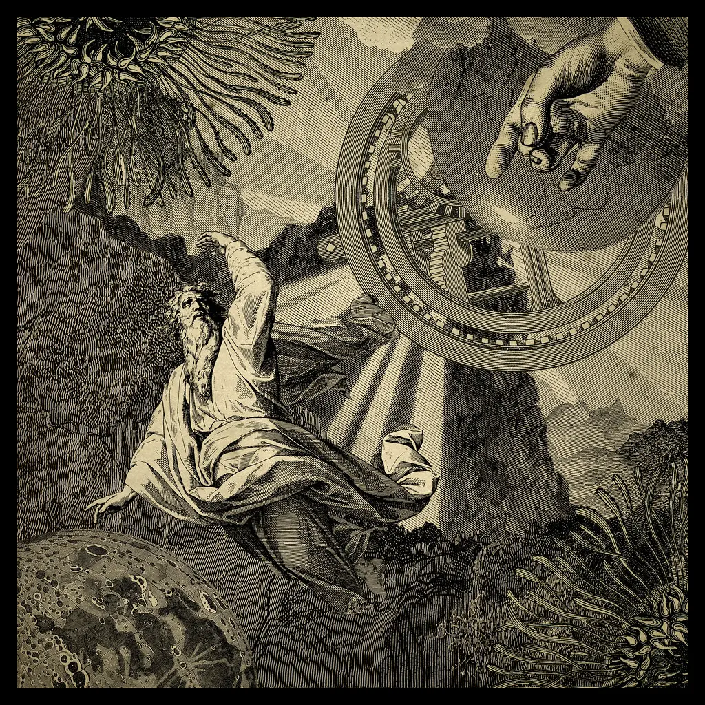

El problema dels tres cossos és un problema fonamental en mecànica celeste que consisteix a determinar les trajectòries de tres masses puntuals que interactuen a través de la força de gravetat. Va ser plantejat per primera vegada per Isaac Newton, però no es va poder resoldre de manera analítica.
En general, el problema implica determinar les trajectòries de tres cossos que s'atrauen entre ells mitjançant la gravetat. Tot i que les equacions de moviment per a dos cossos es poden resoldre de manera analítica, les equacions per a tres cossos no tenen una solució tancada en la majoria dels casos.
El problema dels tres cossos pot donar lloc a diversos fenòmens interessants:
Captura temporal, col·lisions, o fins i tot expulsions de cossos del sistema.

Relacionat:
Un autor xinès - Liu Cixin és l'autor de la trilogia de ciència ficció coneguda com "El problema dels tres cossos". És un autor reconegut internacionalment per la seva habilitat per combinar ciència i narrativa.
Una sèrie - Netflix ha adaptat la trilogia de Liu Cixin a una sèrie de televisió que s'acaba d'estrenar. La sèrie promet oferir una visió interessant dels conceptes explorats en el llibre.
El concepte d'universos paral·lels i multidimensió és una idea fascinant que ha estat objecte d'investigació en física teòrica i cosmologia. Aquests conceptes es refereixen a l'existència de més d'un univers o realitats alternatives que poden coexistir amb el nostre univers.
Algunes teories suggereixen que hi ha múltiples universos separats per membranes quàntiques, on cada univers pot tenir diferents lleis de la física o configuracions de constants fonamentals. Això podria explicar fenòmens desconeguts i oferir nous camins d'investigació.
La sèrie de televisió "The OA" explora aquest tema d'universos paral·lels i multidimensió. La sèrie segueix la història d'una dona anomenada Prairie Johnson, que desapareix durant set anys i torna amb habilitats sobrenaturals i una missió misteriosa.
Relacionat:
Una sèrie - "The OA" és una sèrie de televisió de drama i misteri que segueix la història de Prairie Johnson, una dona que desapareix durant set anys i torna amb habilitats sobrenaturals. La sèrie explora temes com els universos paral·lels, la consciència i el destí.
Directors: Britt Marling i Zal Batmanglij
Any d'estrena: 2016.
Actors principals: Britt Marling, Emory Cohen, Patrick Gibson.
Els investigadors en física quàntica han proposat diverses teories sobre la possibilitat d'universos paral·lels. Algunes d'aquestes teories involucren l'existència de múltiples dimensions, que podrien ser més enllà de les tres dimensions espacials que coneixem.
Si bé aquest és un camp de recerca actualment actiu, encara no s'han confirmat experimentalment les teories sobre universos paral·lels o multidimensionals.
Podeu trobar més informació relacionada aquí